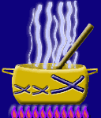

|
|
 |
Receptes Andreuenques |
| -
Escudella
Barrejada
- Trinxat (gaspatxo) andreuenc | -
Pollastre
amb peres - Sardines escabetxades |
| -
Els
fideus de l'àvia - Suquet | -
Conill
en caldereta - Pollastre a la Crema - Mousse de llimona |
|
Feu-nos arribar Receptes vostres
webstap@sant-andreu.com
Tornar